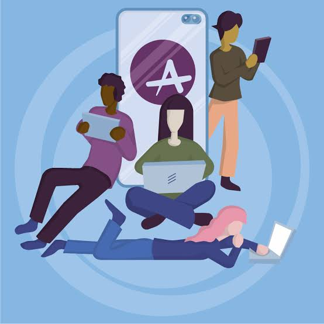
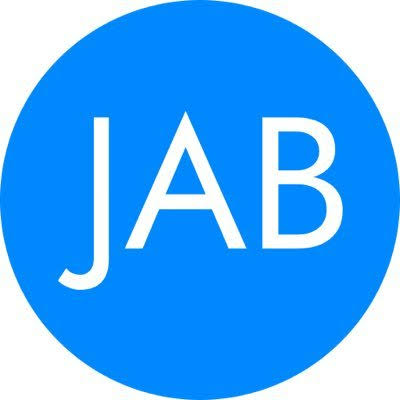
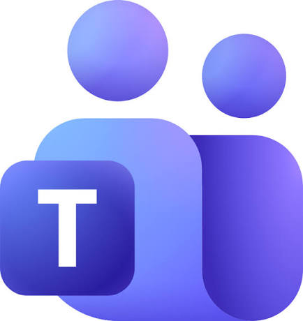

Achieve
Achive is great for its quick quizzes, simple explanations and easy access to past papers. It is all sorted by topic and has wide range of subjects. I do find it better for other subjects than others though, for example Dynamic Maths is better for maths past papers. The assesments are really good for consolidating knowledge for subjects like biology or chemistry.

JABchem
JABchem is great for science subjects and maths. It has loads of past papers and ,aswell as the offical Qualificatons Scotland marking schemes, it has its own marking schemes which show what percentage of pupils got the question right which is pretty cool.

Microsoft Teams
If your class has a Microsoft Team there will probably be a load of reasorces on there. If you have a team you probably already know, I just need one more thing. If you don't have a team you could ask your teacher to create one for your class.
More Resources
Here are some more resources that others have found useful for studying and learning.
- BBC Bitesize - A great resource for revision and learning new topics.
- Khan Academy - Offers practice exercises and instructional videos across a wide range of subjects.
- Coursera - Provides online courses from top universities and companies.
- edX - Another platform for online courses from leading institutions.
- Quizlet - Useful for creating flashcards and study sets for various subjects.